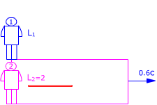
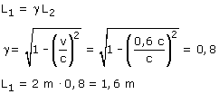

a) El rectángulo representa un recinto que
se mueve respecto al observador 1 con velocidad 0.6c  Observador 1 (O'): Observador 2 (O) Aplicando la conversión de longitudes resulta:  El observador 1 ve la varilla más corta de lo que la ve el observador 2 |